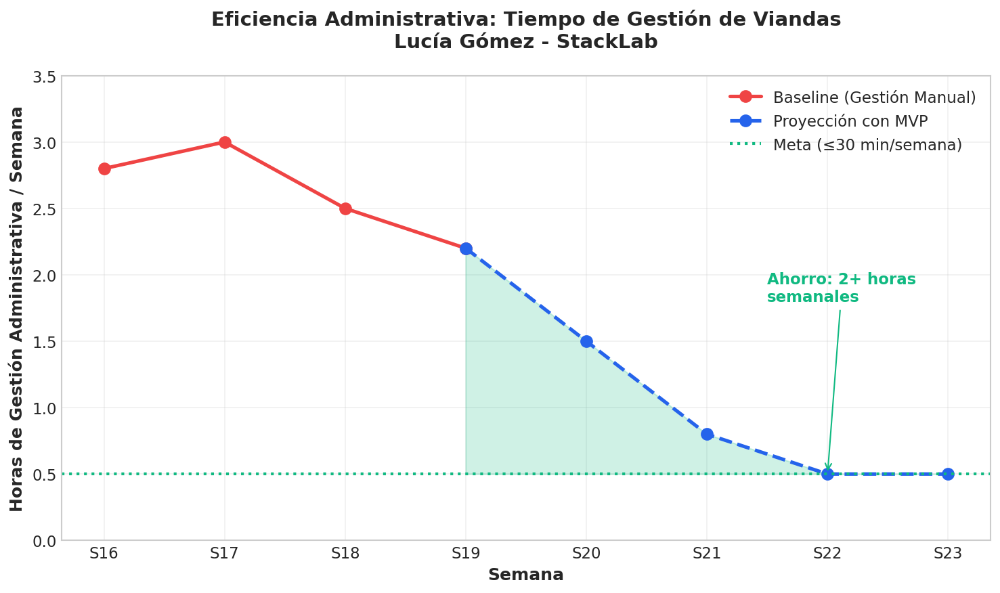
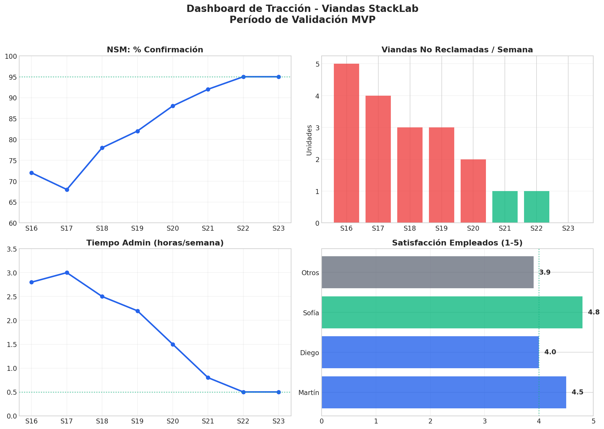

Los números no mienten.
"El problema existe. La solución está lista. Y la decisión es mía."

📈 North Star Metric: 72% → 95%

💰 Pérdidas: $71-129k → ≤$15k ARS/mes

⏱️ Tiempo admin: 2.5h → 0.5h/semana

🎯 Dashboard ejecutivo 4 paneles
¿Listo para dejar de perder plata en viandas que nadie come?